Über
ClassicTunes ist eine moderne macOS-App, die von Grund auf mit Swift und SwiftUI entwickelt wurde und das Aussehen und die Bedienung von iTunes 7-10 auf modernen Apple Silicon Macs originalgetreu nachbildet.
- Funktionierender Cover Flow
- MiniPlayer
- Wiedergabelisten (mit intelligenter m3u-Unterstützung)
- iTunes Store-Integration
- Songtext-Unterstützung (mit lrclib oder Metadaten)
- iPod-Synchronisierung (1st-2nd gen Shuffles)
- Discord Rich Presence (mit MusicPresence)
- Klassische iTunes 7-10 Ästhetik
Systemvoraussetzungen: macOS 13 Ventura oder neuer, Apple Silicon (M1 und neuer).
ClassicTunes herunterladenAuf GitHub ansehen
Screenshots
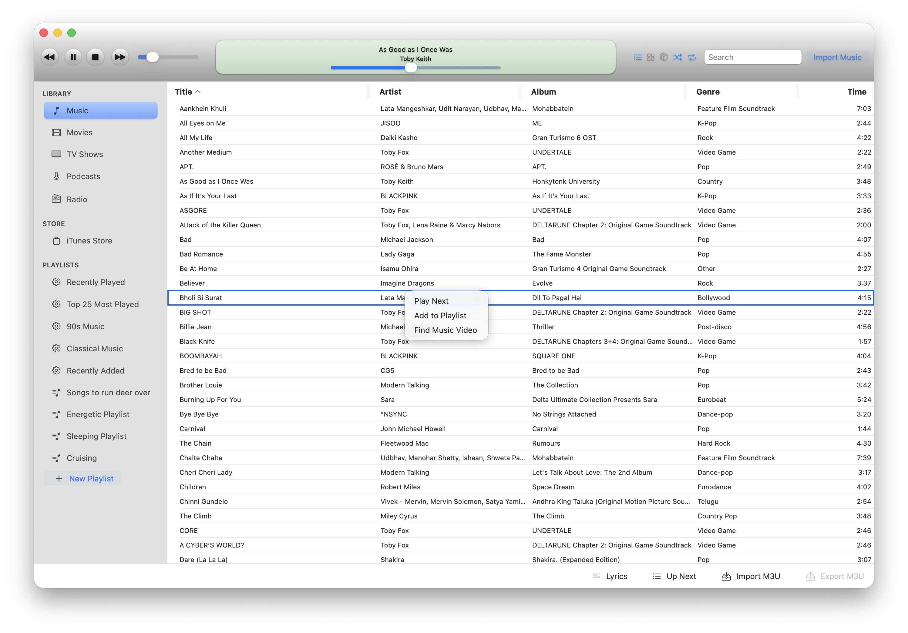
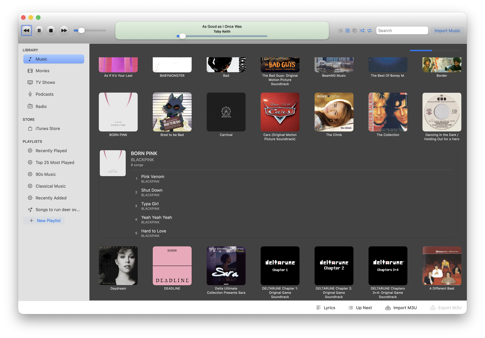
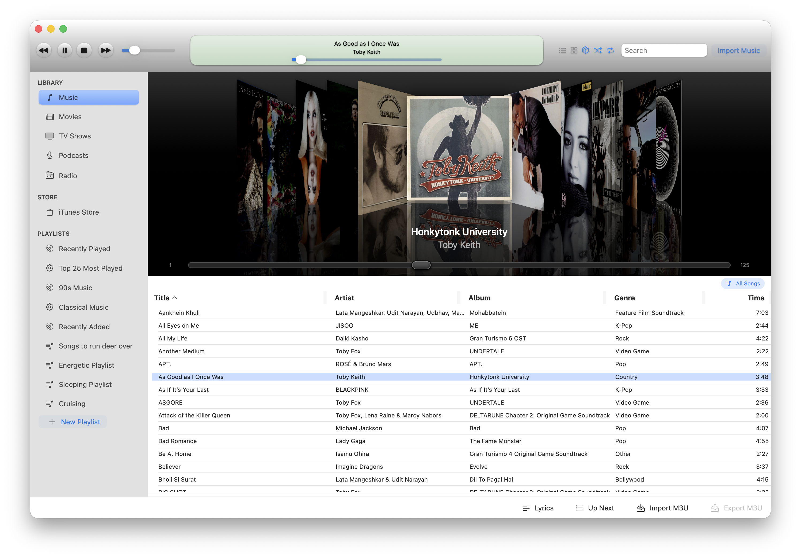
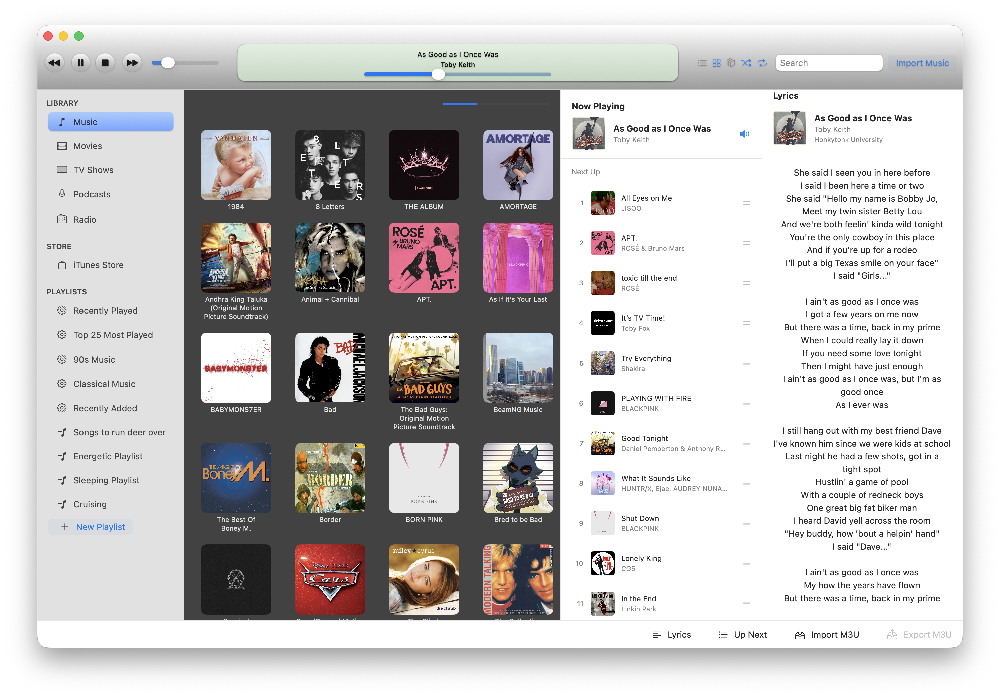
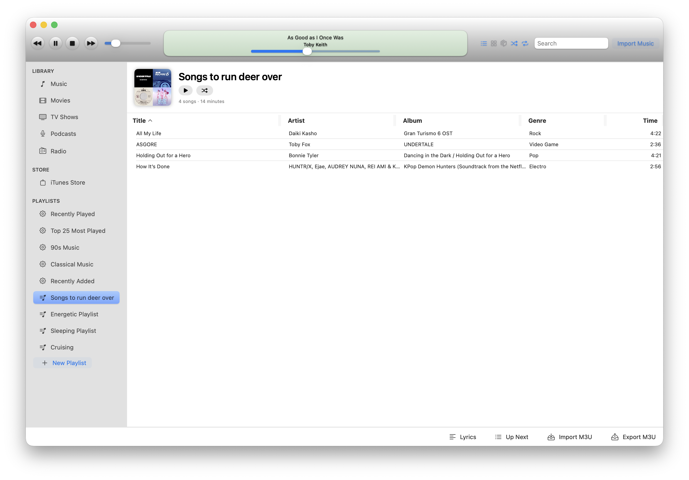
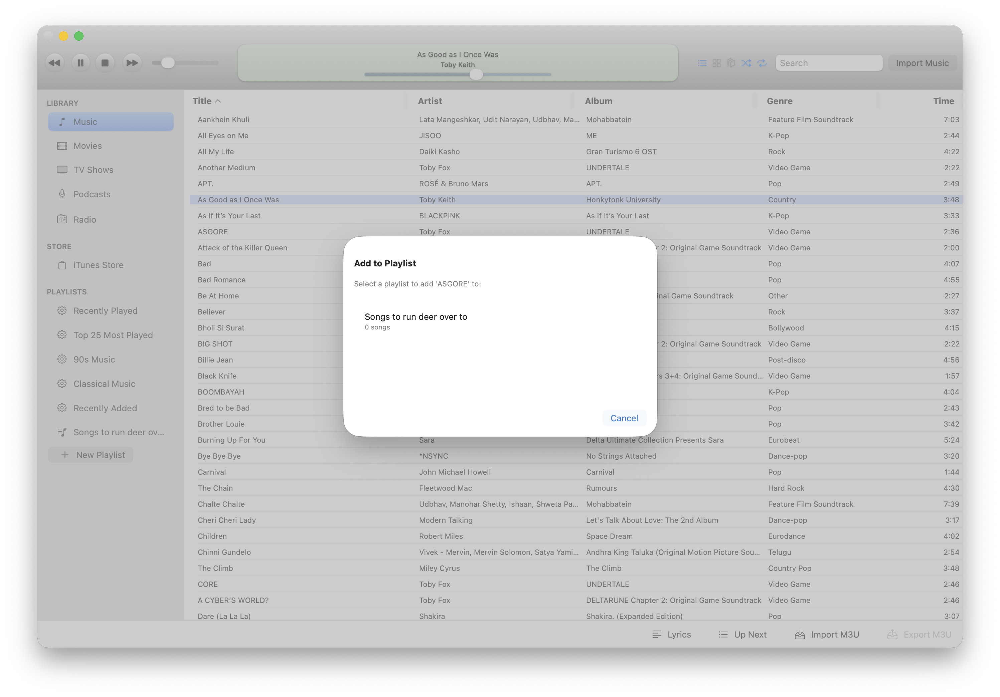
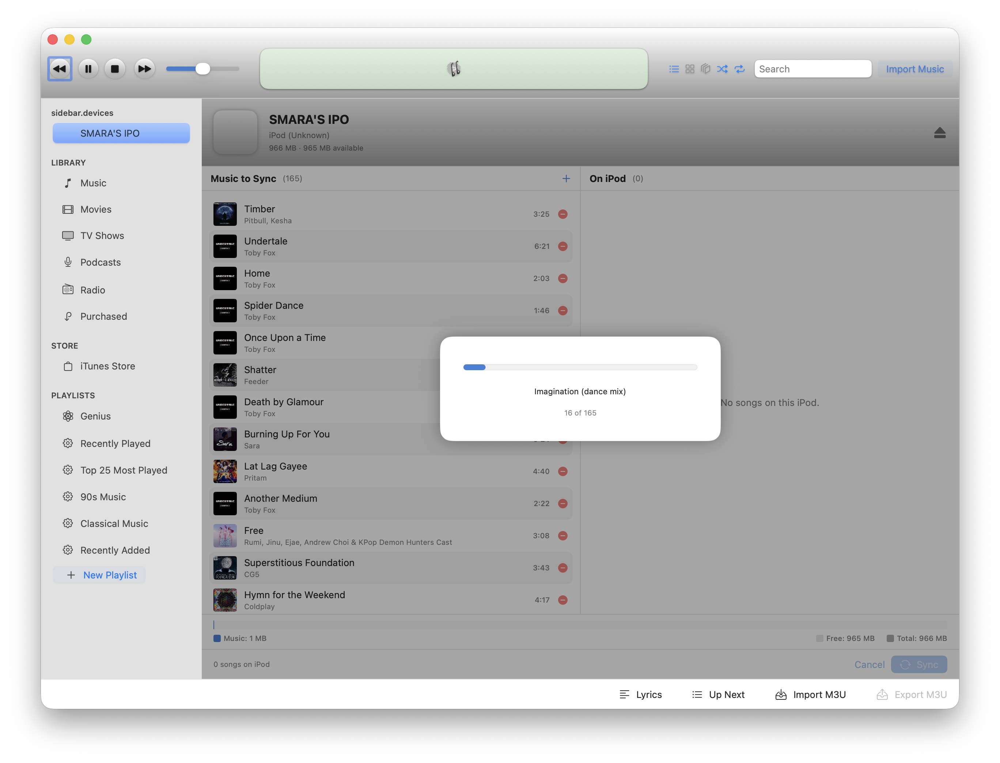
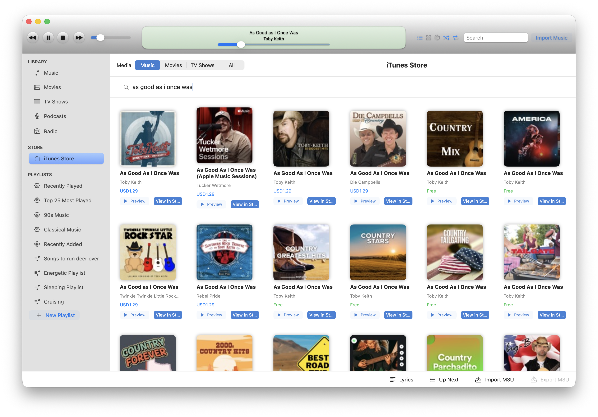
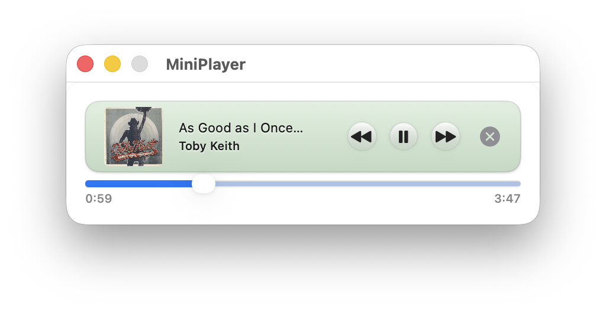
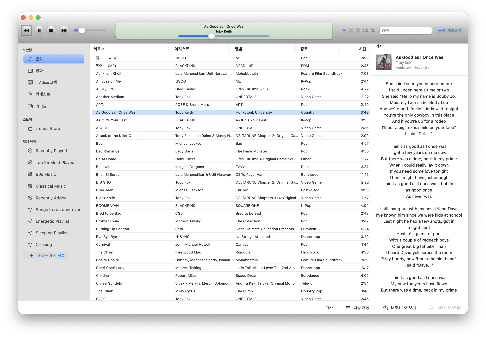
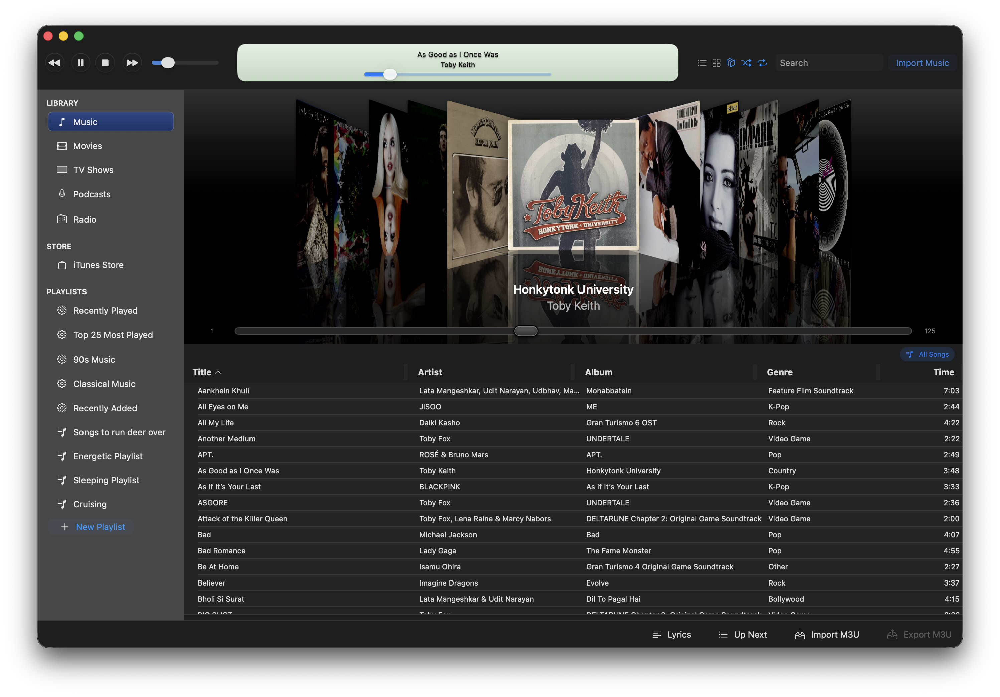
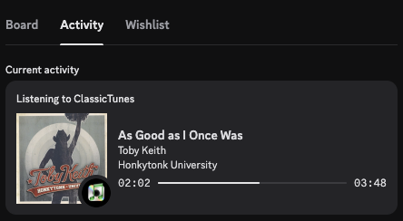